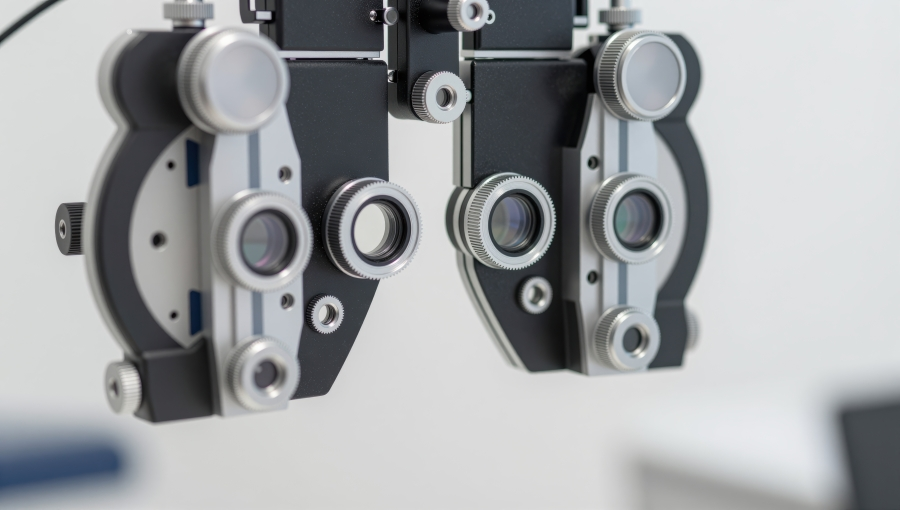

Vcare's Services

At Vcare Opticals, we recommend an annual eyetest to properly maintain your vision, or to check in and take advantage of our services when you
notice any changes to your vision. We've recently brought in new services ontop of our existing care procedures so that our professionals can
solve your vision woes post haste.
Book Appointment
Vcare's Annual Eye Checkup Package Includes the following services:
- Vision Assessment
- A detailed examination of vision clarity, depth perception, and colour vision.
- Eye‑Health Screening
- Checks for early signs of eye diseases such as cataracts and glaucoma.
- Retinal Imaging
- Advanced imaging to analyse retinal health.
- Prescription Update
- Reviewing and updating glasses or contact lens prescriptions.
- Lifestyle & Visual‑Care Discussion
- Guidance on screen habits, lighting, and eye‑care routines.